Medusa：使用多个 decoding 头的简洁 LLM 推理加速框架
Tianle Cai* 1 2，Yuhong Li* 3，Zhengyang Geng4，Hongwu Peng5，Jason D. Lee1，Deming Chen3，Tri Dao1 2
摘要
大语言模型（LLM）采用自回归 decoding，需要顺序计算，每一步都依赖前一步的输出。这造成了一个瓶颈：每一步都需要将完整模型参数从高带宽内存（HBM）移至加速器缓存。虽然已有 speculative decoding 等方法尝试解决这一问题，但获取和维护独立草稿模型的困难阻碍了其实现。本文提出 Medusa，一种通过添加额外 decoding 头、并行预测多个后续 token 来增强 LLM 推理的高效方法。利用基于树的 attention 机制，Medusa 在每个 decoding 步骤构造多个候选后续序列，并同时验证它们。借助并行处理，Medusa 显著减少了所需的 decoding 步数。为满足不同使用场景，我们提出两个层次的 Medusa 微调流程。Medusa-1：直接在冻结的主干 LLM 之上微调 Medusa，实现无损推理加速。Medusa-2：将 Medusa 与主干 LLM 联合微调，提高 Medusa 头的预测准确率，实现更高加速；但需要特殊训练方案，以保留模型能力。此外，我们提出若干扩展，改进或拓展 Medusa 的用途，包括用于没有可用训练数据场景的自蒸馏，以及在维持生成质量的同时提高接受率的典型接受方案。我们在不同规模、采用不同训练流程的模型上评估 Medusa。实验表明，Medusa-1 能在不损害生成质量的情况下实现超过 2.2 倍的加速，而 Medusa-2 则将加速进一步提高至 2.3–2.8 倍。
*同等贡献。1Princeton University；2Together AI；3University of Illinois Urbana-Champaign；4Carnegie Mellon University；5University of Connecticut。通信作者：Tianle Cai <tianle.cai@princeton.edu>，Yuhong Li <leeyh@illinois.edu>。
第 41 届国际机器学习大会论文集，奥地利维也纳。PMLR 235，2024。版权 2024，归作者所有。
1. 引言
大语言模型（LLM）的近期进展表明，随着模型规模增长至数十亿参数，语言生成质量显著改善（Brown et al.，2020；Chowdhery et al.，2022；Zhang et al.，2022；Hoffmann et al.，2022；OpenAI，2023；Google，2023；Touvron et al.，2023）。然而，这种增长也增加了推理延迟，给实际应用带来重大挑战。从系统角度看，LLM 推理主要受内存带宽限制（Shazeer，2019；Kim et al.，2023），延迟的主要瓶颈来自加速器的内存带宽，而非算术计算。这一瓶颈根植于自回归 decoding 的顺序特性：每次前向传播都必须将完整模型参数从高带宽内存（HBM）传输至加速器缓存。整个过程只生成一个 token，未能充分利用现代加速器的算术计算潜力，因而效率低下。
为解决这一问题，一种加速 LLM 推理的方法是提高 decoding 过程的算术强度（总浮点运算次数 FLOPs 与总数据搬运量之比），并减少 decoding 步数。基于这一思路，研究者提出了 speculative decoding（Leviathan et al.，2022；Chen et al.，2023；Xia et al.，2023；Miao et al.，2023）。该方法用较小的草稿模型生成 token 序列，再由原始的大模型筛选修正，得到可接受的后续内容。不过，获得合适的草稿模型仍然困难，而把它集成到分布式系统中则更难（Chen et al.，2023）。
本文重新审视并（下页续）
（接上页）完善了在主干模型之上使用多个 decoding 头以加快推理的概念（Stern et al.，2018），以此取代用独立草稿模型顺序生成候选输出的方式。我们发现，若有效应用，这项技术能够克服 speculative decoding 的挑战，无缝集成到现有 LLM 系统。具体来说，我们引入 Medusa，通过集成额外 decoding 头并发预测多个 token，从而增强 LLM 推理。这些头采用参数高效的方式微调，可以添加到任何已有模型。由于不需要草稿模型，Medusa 易于集成到当前 LLM 系统，包括分布式环境中的系统，确保使用体验友好。
我们利用两个关键认识进一步增强 Medusa。首先，当前每个 decoding 步骤只生成一个候选后续序列的做法，无法高效利用计算资源。为此，我们提出使用 Medusa 头生成多个候选后续序列，并通过简单调整 attention mask 并发验证。其次，我们可以复用 speculative decoding 使用的拒绝采样方案（Leviathan et al.，2022；Chen et al.，2023），生成与原模型分布相同的一致回答。但是，这无法进一步提高加速比。作为替代，我们引入典型接受方案，从 Medusa 头的输出中选择合理候选。我们使用温度作为阈值，控制相对原模型预测的偏离程度，为拒绝采样提供高效替代。结果表明，所提典型接受方案可以在维持相近生成质量的同时，进一步提高 decoding 速度。
为使 LLM 配备具有预测能力的 Medusa 头，我们提出针对不同场景的两种微调流程。对于计算资源受限，或希望在不影响性能的前提下将 Medusa 加入已有模型的情况，我们推荐 Medusa-1。这种方法只需要极少内存，并可采用类似 QLoRA（Dettmers et al.，2023）的量化技术进一步优化；由于主干模型固定，因此不会损害生成质量。然而，Medusa-1 未充分发挥主干模型的潜力。我们可以进一步微调主干，提高 Medusa 头的预测准确率，直接带来更大加速。因此，我们提出 Medusa-2，适用于计算资源充足，或直接从基础模型进行监督微调（SFT）的场景。Medusa-2 的关键在于一套训练方案，可以联合训练 Medusa 头和主干模型，同时不损害模型的下一 token 预测能力与输出质量。我们根据模型训练方案和数据可用性，提出获取训练数据集的不同策略。若模型在公开数据集上微调，该数据集可直接用于 Medusa。若数据集不可用，或模型经历过基于人类反馈的强化学习（RLHF）（Ouyang et al.，2022），则建议采用自蒸馏，为 Medusa 头生成训练数据集。
我们的实验主要关注 batch 大小为一的情况，这代表将 LLM 本地部署供个人使用的场景。我们在不同规模、不同训练设置的模型上测试 Medusa，包括 Vicuna-7B、13B（使用公开数据集训练），Vicuna-33B（Chiang et al.，2023）（使用私有数据集训练1），以及 Zephyr-7B（经过监督微调与对齐训练）。面对不同类型的提示，Medusa 都能在不损害生成质量的情况下实现 2.3 至 2.8 倍加速。
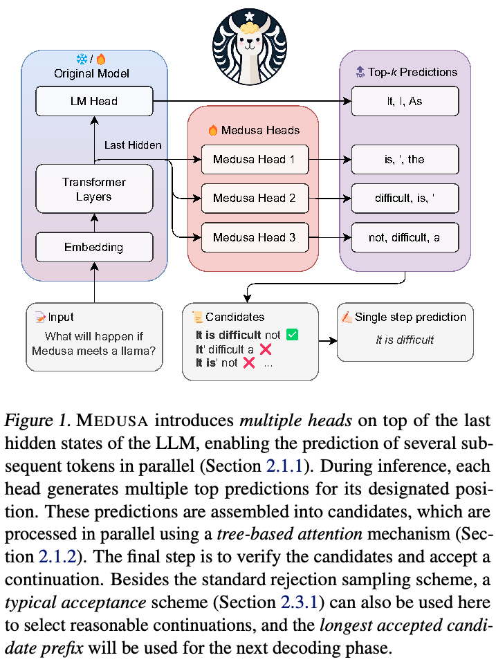
2. 方法
Medusa 沿用 speculative decoding 的框架，每个 decoding 步骤主要包含三个子步骤：（1）生成候选，（2）处理候选，（3）接受候选。对于 Medusa，（1）由（下页续）
1经联系作者确认，该版本是实验版本，使用的部分数据与 Vicuna-7B、13B 不同。
（接上页）Medusa 头完成，（2）由 tree attention 实现。由于 Medusa 头位于原模型之上，（2）计算得到的 logits 可以用于下一个 decoding 步骤的子步骤（1）。最后的步骤（3）既可以采用拒绝采样（Leviathan et al.，2022；Chen et al.，2023），也可以采用典型接受（第 2.3.1 节）实现。总体流程见图 1。
本节首先介绍 Medusa 的关键组成，包括 Medusa 头和 tree attention。随后给出两个层次的微调流程，满足不同使用场景。最后提出自蒸馏与典型接受两项扩展，分别应对没有 Medusa 训练数据的情况，以及提高 decoding 流程的效率。
2.1. 关键组成
2.1.1. Medusa 头
在 speculative decoding 中，后续 token 由辅助草稿模型预测。该草稿模型必须足够小，同时又足够有效，能够生成原模型会接受的后续内容。满足这些要求很有挑战；已有方法（Spector & Re，2023；Miao et al.，2023）往往依赖单独预训练一个较小模型。此类预训练需要大量额外计算资源。例如，Miao et al.（2023）报告使用了 275 个 NVIDIA A100 GPU 小时。此外，单独预训练可能使草稿模型与原模型之间出现分布偏移，导致生成原模型不偏好的后续内容。Chen et al.（2023）也强调了在分布式环境中同时服务多个模型的复杂性。
为简化 LLM 推理加速并使其更易普及，我们受到 Stern et al.（2018）的启发；该工作将并行 decoding 用于机器翻译和图像超分辨率等任务。Medusa 头是在原模型最后一层隐藏状态之上添加的额外 decoding 头。具体而言，给定原模型在位置 \(t\) 的最后隐藏状态 \(h_t\)，我们在 \(h_t\) 上添加 \(K\) 个 decoding 头。第 \(k\) 个头用于预测后续 token 中位于 \((t+k+1)\) 位置的 token（原语言模型头用于预测 \((t+1)\) 位置）。第 \(k\) 个头的预测记为 \(p_t^{(k)}\)，代表词表上的一个分布；原模型的预测则记为 \(p_t^{(0)}\)。遵循 Stern et al.（2018），我们为每个头使用带残差连接的单层前馈网络。我们发现，这种简单设计足以取得令人满意的性能。第 \(k\) 个头定义如下：
\[p_t^{(k)}=\operatorname{softmax}\left(W_2^{(k)}\cdot\left(\operatorname{SiLU}(W_1^{(k)}\cdot h_t)+h_t\right)\right),\] \[\text{其中 }W_2^{(k)}\in\mathbb{R}^{d\times V},\quad W_1^{(k)}\in\mathbb{R}^{d\times d}.\]\(d\) 是 LLM 最后一个隐藏层的输出维度，\(V\) 是词表大小。我们将 \(W_2^{(k)}\) 初始化为与原语言模型头相同的值，将 \(W_1^{(k)}\) 初始化为零，使 Medusa 头的初始预测与原模型一致。遵循 Llama 模型（Touvron et al.，2023），我们使用 SiLU 激活函数（Elfwing et al.，2017）。
与草稿模型不同，Medusa 头在原始主干模型上进行训练；主干在训练时可以保持冻结（Medusa-1），也可以一同训练（Medusa-2）。该方法利用强大基础模型已学到的表示，甚至可以在单张 GPU 上微调大型模型。此外，它确保 Medusa 头的分布与原模型对齐，从而缓解分布偏移问题。由于新头与原语言模型头一样仅包含单层，Medusa 不会增加服务系统设计的复杂性，并对分布式设置友好。第 2.2 节将讨论 Medusa 头的训练方案。
2.1.2. Tree attention
通过 Medusa 头，我们得到后续 \(K+1\) 个 token 的概率预测，从而可创建长度为 \(K+1\) 的后续序列作为候选。虽然 speculative decoding 研究（Leviathan et al.，2022；Chen et al.，2023）建议只采样一个后续序列作为候选，但在 decoding 中利用多个候选，可以提高每个 decoding 步骤的期望接受长度。不过，更多候选也会增加计算需求。为取得平衡，我们使用树结构的 attention 机制，并发处理多个候选。这一机制不同于传统因果 attention：在此框架中，只有来自同一后续序列的 token 才被视为历史数据。受到图神经网络领域将图结构嵌入 attention 的概念（Ying et al.，2021）启发，我们将树结构纳入 attention mask，如图 2 所示。值得注意的是，Miao et al.（2023）、Spector & Re（2023）等独立工作也探索了类似思路：它们采用自下而上的方法，合并草稿模型生成的多个候选，构造树。我们的方法则得益于 Medusa 头生成候选的结构，采用自上而下的方法构建树。给定第 \(k\) 个头，其 Top-\(s_k\) 预测充当（下页续）
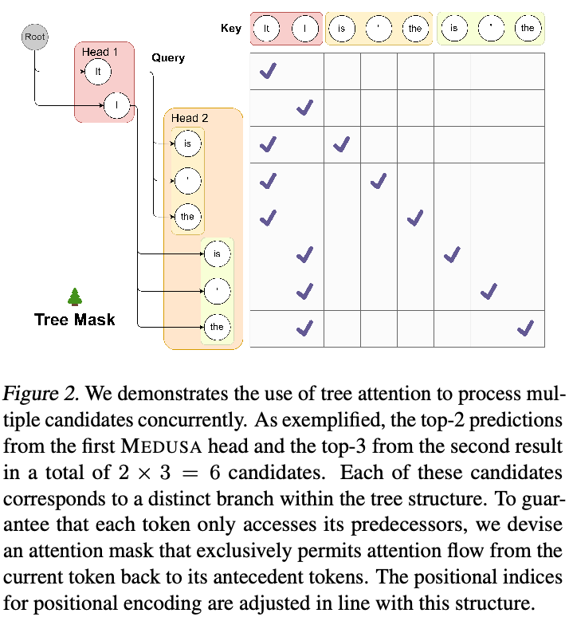
（接上页）形成候选的基础，其中 \(s_k\) 是指定的超参数。通过对每个头的 Top-\(s_k\) 预测求笛卡尔积，构成这些候选。例如，图 2 中 \(s_1=2\)、\(s_2=3\)，第一个头的每项预测之后，都可以接上第二个头的任意预测。这产生一棵树，第 \(k\) 层具有 \(s_k\) 个分支（将虚拟根视为第 0 层；实际中第 0 层对应原模型语言模型头的预测，可以独立采样）。在树中，一个 token 只有其祖先 token 被视为历史上下文；attention mask 确保 attention 仅作用于这些祖先 token。采用此 mask 并适当设置位置编码的位置索引后，无需扩大 batch 就能同时处理大量候选。新增 token 总数为 \(\sum_{k=1}^K\prod_{i=1}^k s_i\)。
本节展示了通过笛卡尔积构造树结构这一最简单且规则的方法。不过，也可以采用更精细的方式构造树，利用不同头的不同高概率预测之间准确率不均衡的特点。第 2.3.3 节将讨论这一点。
2.2. 训练策略
最基本的方法是冻结主干模型，微调 Medusa 头。不过，联合训练主干与 Medusa 头可以显著提高 Medusa 头的准确率。根据计算资源与使用场景的具体需求，我们提出两个层次的训练策略。
本节假设有一个与目标模型输出分布一致的训练数据集，例如用于目标模型监督微调（SFT）的数据集。第 2.3.2 节将讨论如何利用自蒸馏，消除对这类数据集的需求。
2.2.1. Medusa-1：冻结主干
在主干冻结时，可以采用 Medusa 头的预测与真实值之间的交叉熵损失进行训练。具体而言，给定位置 \(t+k+1\) 的真实 token \(y_{t+k+1}\)，第 \(k\) 个头的损失为 \(\mathcal{L}_k=-\log p_t^{(k)}(y_{t+k+1})\)，其中 \(p_t^{(k)}(y)\) 表示第 \(k\) 个头预测 token \(y\) 的概率。我们还观察到，\(k\) 越大，\(\mathcal{L}_k\) 越大，这是合理的，因为第 \(k\) 个头的预测随着 \(k\) 增大变得更不确定。因此，可为 \(\mathcal{L}_k\) 添加权重 \(\lambda_k\)，平衡不同头的损失。Medusa 总损失为：
\[\mathcal{L}_{\mathrm{Medusa-1}}=\sum_{k=1}^K-\lambda_k\log p_t^{(k)}(y_{t+k+1}).\tag{1}\]实际中，我们将 \(\lambda_k\) 设为 0.8 等常数的 \(k\) 次幂。由于只需要主干提供隐藏状态，可以使用量化版本的主干，降低内存消耗。这使 LLM 推理加速更易普及：采用量化后，类似 QLoRA（Dettmers et al.，2023），Medusa 可在单张消费级 GPU 上为大型模型训练。训练只需几小时，例如单张 NVIDIA A100 PCIE GPU，在 60k 个 ShareGPT 样本上为 Vicuna-7B 训练 Medusa-1 需要 5 小时。
2.2.2. Medusa-2：联合训练
为进一步提升 Medusa 头的准确率，可将其与主干模型联合训练。不过，这需要特殊训练方案，以保持主干的下一 token 预测能力与输出质量。为此，我们提出三项策略：
- 组合损失：为保留主干的下一 token 预测能力，需要将主干的交叉熵损失 \(\mathcal{L}_{\mathrm{LM}}=-\log p_t^{(0)}(y_{t+1})\) 加入 Medusa 损失。还添加权重 \(\lambda_0\)，平衡主干与 Medusa 头的损失。因此总损失为： \[\mathcal{L}_{\mathrm{Medusa-2}}=\mathcal{L}_{\mathrm{LM}}+\lambda_0\mathcal{L}_{\mathrm{Medusa-1}}.\tag{2}\]
- 不同学习率：由于主干模型已经充分训练，而 Medusa 头还需要更多训练，可以为两者使用不同学习率，使 Medusa 头更快收敛，同时保持主干能力。
- 预测头 warmup：我们注意到，训练开始时 Medusa 头的损失很大，导致较大的 gradient，可能扭曲主干参数。遵循 Kumar et al.（2022）的思路，可以采用两阶段训练。第一阶段与 Medusa-1 一样只训练 Medusa 头。第二阶段采用 warmup 策略联合训练主干与 Medusa 头。具体来说，先训练主干几个 epoch，再将 Medusa 头与主干一起训练。除了这种简单策略，还可采用更精细的 warmup 策略，逐渐增加主干损失的权重 \(\lambda_0\)。我们发现两种策略在实践中都有效。
结合这些策略，便能在不损害主干能力的前提下，联合训练 Medusa 头与主干。此外，这套方案可与监督微调（SFT）结合，得到原生支持 Medusa 的模型。
2.2.3. 如何选择预测头数量
根据经验，我们发现最多五个头就已足够。因此，建议使用五个头训练，并参考第 2.3.3 节的策略，确定 tree attention 的最优配置。优化 tree attention 后，有时推理只需三个或四个头；此时可直接忽略多余头，不产生额外开销。
2.3. 扩展
2.3.1. 典型接受
Speculative decoding 论文（Leviathan et al.，2022；Chen et al.，2023）采用拒绝采样，产生多样且与原模型分布一致的输出。然而，后续实现（Joao Gante，2023；Spector & Re，2023）表明，随着采样温度升高，这种采样策略的效率下降。直观上，可以考虑草稿模型与原模型完全相同这一极端情况：采用贪心 decoding 时，草稿模型的全部输出都会被接受，因此效率最大。相反，拒绝采样会引入额外开销，因为草稿模型与原模型独立采样。即使分布完全一致，草稿输出仍可能被拒绝。
但在实际场景中，从语言模型采样通常是为了生成多样回答，温度参数仅用于调节回答的“创造性”。因此，更高温度应给原模型更多接受草稿输出的机会。我们认为，通常没有必要匹配原模型分布。于是，我们提出采用典型接受方案选择合理候选，而不是拒绝采样。这受到截断采样研究（Hewitt et al.，2022）的启发，详见附录 A。目标是选择“典型”候选，即原模型产生它们的概率不会低得过分。我们自然地以原模型预测概率衡量这一点，根据预测分布设定阈值，决定是否接受。具体而言，给定上下文 \(x_1,x_2,\ldots,x_n\)，评估由原语言模型头与 Medusa 头的高概率预测组成的候选序列 \((x_{n+1},x_{n+2},\ldots,x_{n+K+1})\) 时，考虑条件：
\[\begin{aligned}p_{\mathrm{original}}(x_{n+k}\mid x_1,x_2,\ldots,x_{n+k-1})>\\\min\left(\epsilon,\delta\exp\left(-H(p_{\mathrm{original}}(\cdot\mid x_1,x_2,\ldots,x_{n+k-1}))\right)\right).\end{aligned}\]其中 \(H(\cdot)\) 是熵函数，\(\epsilon\)、\(\delta\) 分别为硬阈值和依赖熵的阈值。该准则改编自 Hewitt et al.（2022），依据两点观察：（1）相对高概率的 token 有意义；（2）分布熵较高时，多种后续内容均可视为合理。Decoding 时按此准则评估每个候选，满足条件的候选前缀会被接受。为保证每步至少生成一个 token，首个 token 采用贪心 decoding 并无条件接受，后续 token 则采用典型接受。当前步骤的最终预测由所有候选中最长的已接受前缀决定。
考察这一方案可得到若干认识。首先，温度设为 0 时，它退化为贪心 decoding，因为只有概率最大的 token 具有非零概率。温度超过 0 时，只要 \(\epsilon,\delta\) 合适，贪心 decoding 的结果总会被接受，因为这些 token 的概率最大，从而获得最大加速。同样，一般情况下，提高温度会相应带来更长的接受序列，实验结果也证实了这一点。
经验上，我们验证了典型接受能够在保持相近生成质量的同时，实现更好的加速，如图 5 所示。
2.3.2. 自蒸馏
第 2.2 节假设存在一个匹配目标模型输出分布的训练数据集。但实际并非总是如此。例如，模型所有者可能只发布模型、不发布训练数据；或者模型经历了基于人类反馈的强化学习（RLHF），使输出分布与训练数据不同。为解决此问题，我们提出自动化自蒸馏流程，使用模型本身生成 Medusa 头的训练数据集，使之匹配模型输出分布。
数据生成过程很直接。首先取一个领域与目标模型相近的公开种子数据集，例如对话模型使用 ShareGPT（ShareGPT，2023）。随后取出数据集中的提示，让模型回答。为获得多轮对话样本，可按顺序将种子数据集的提示输入模型。对于 Zephyr-7B（Tunstall et al.，2023）这类在对话双方角色上训练的模型，它们具备自我对话能力；只需输入首个提示，让模型生成多轮对话。
对于 Medusa-1，这个数据集足够训练 Medusa 头。但对于 Medusa-2，我们发现仅用它训练主干与 Medusa 头，通常会降低生成质量。事实上，即使不训练 Medusa 头，仅用此数据集训练主干也会导致性能下降。这表明，类似经典知识蒸馏工作（Kim & Rush，2016），主干模型的标签也需要使用原模型的概率预测，而非真实 token。具体地，主干损失为：
\[\mathcal{L}_{\mathrm{LM-distill}}=\operatorname{KL}(p_{\mathrm{original},t}^{(0)}\parallel p_t^{(0)}),\]其中 \(p_{\mathrm{original},t}^{(0)}\) 表示原模型在位置 \(t\) 的预测概率分布。
不过，朴素地获取原模型概率预测，需要训练时同时维护两个模型，增加内存需求。为缓解此问题，我们提出一种简单有效的方法，利用自蒸馏设置：用 LoRA（Hu et al.，2021）等参数高效适配器微调主干。这样，关闭适配器就是原模型，因此蒸馏无需额外内存消耗。综合而言，该自蒸馏流程可以在不损害主干能力的情况下训练 Medusa-2，且几乎不增加内存消耗。最后，一点使用建议：此时最好使用不量化的 LoRA；否则教师模型就是量化模型，可能降低生成质量。
2.3.3. 搜索优化的树构造
第 2.1.2 节通过笛卡尔积展示了最简单的树构造方法。但在树总节点数预算固定时，规则树未必最优。直观上，不同头的高概率预测组成的候选，准确率可能不同，因此可利用准确率估计构造树。
具体地，可在校准数据集上计算不同头的各个高概率预测的准确率。令 \(a_k^{(i)}\) 表示第 \(k\) 个头按概率排序第 \(i\) 项预测的准确率。2假定各准确率独立，由不同头的第 \([i_1,i_2,\ldots,i_k]\) 项预测组成的候选序列，其准确率可估为 \(\prod_{j=1}^k a_j^{(i_j)}\)。令 \(I\) 表示所有可能的 \([i_1,i_2,\ldots,i_k]\) 组合集合，每个元素均可映射为树节点，不仅含叶节点，也含所有内部节点。于是，候选序列接受长度的期望为：
\[\sum_{[i_1,i_2,\ldots,i_k]\in I}\prod_{j=1}^k a_j^{(i_j)}.\]若逐个添加节点构造树，新节点对期望的贡献恰好就是该节点关联的准确率。因此，可贪心地选择与当前树相连、准确率最高的节点加入树。重复此过程，直至总节点数达到期望数量。这样就能构造使接受长度期望最大的树。更多细节见附录 C。
3. 实验
本节通过实验展示 Medusa 在不同设置中的有效性。首先在 Vicuna-7B、13B（Chiang et al.，2023）上评估，展示 Medusa-1 与 Medusa-2 的性能。随后在 Vicuna-33B 和 Zephyr-7B 上评估，展示当无法直接获取微调方案（例如 Vicuna-33B）时，自蒸馏的可行性，（下页续）
2这里的准确率定义为单独第 \(i\) 个高概率 token 的准确率，即 Top-\(i\) 准确率减去 Top-\((i-1)\) 准确率。
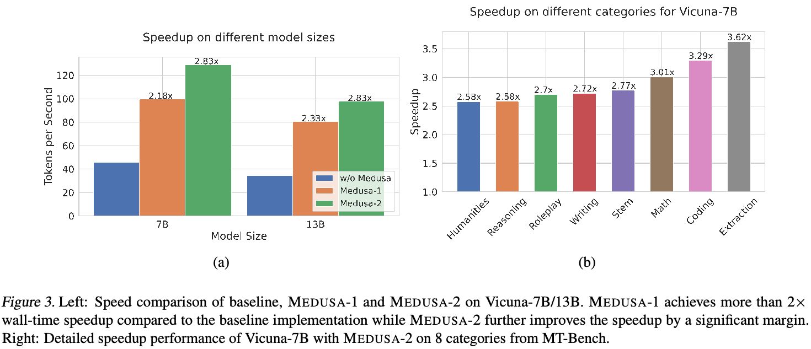
（接上页）以及 Zephyr-7B 这类采用基于人类反馈的强化学习（RLHF）的模型中的可行性。评估使用多轮对话形式的 MT-Bench 基准（Zheng et al.，2023）。详细设置见附录 B。
3.1. 案例研究：Vicuna-7B、13B 上的 Medusa-1 与 Medusa-2
实验设置。我们采用 Vicuna 模型系列（Chiang et al.，2023），包含由 Llama（Touvron et al.，2023）微调得到的不同规模对话模型（7B、13B、33B）。其中，7B 和 13B 使用 ShareGPT（ShareGPT，2023）训练，33B 为使用私有数据集训练的实验模型。本节使用 ShareGPT 为 7B 和 13B 模型训练 Medusa 头，共 2 个 epoch。采用的 Vicuna 版本为 v1.5，由 Llama-2 模型以 4096 序列长度微调得到。
结果。结果汇总于图 3，基线为 Hugging Face 默认实现。图 3a 表明，对 7B 模型而言，Medusa-1 与 Medusa-2 都显著提高了以每秒处理 token 数衡量的速度：Medusa-1 为 2.18 倍，Medusa-2 进一步提高至 2.83 倍。在更大的 13B 模型上，Medusa-1 加速为 2.33 倍，Medusa-2 仍保持相对于基线 2.83 倍的提升。我们还绘制了 Medusa-2 Vicuna-7B 按类别划分的加速情况。编程类别达到 3.29 倍加速，说明 Medusa 对这一领域特别有效，也表明优化广泛用于软件开发及其他编程任务的代码 LLM 具有巨大潜力。“信息提取”类别的加速最高，为 3.62 倍，表明 Medusa 对这一任务优化显著。总体而言，结果说明 Medusa 能显著提高不同规模模型、不同任务中的推理速度。
3.2. 案例研究：在 Vicuna-33B 和 Zephyr-7B 上使用自蒸馏训练
实验设置。本案例关注需要自蒸馏的情形，以 Vicuna-33B（Chiang et al.，2023）和 Zephyr-7B（Tunstall et al.，2023）为例。按照第 2.3.2 节流程，先用种子提示生成数据集。我们使用 ShareGPT（ShareGPT，2023）和 UltraChat（Ding et al.，2023）作为种子，分别收集约 100k 个样本。有趣的是，Zephyr 在单个提示后能连续生成多轮对话，使大规模数据收集变得容易。对于 Vicuna-33B，我们迭代输入每个多轮种子对话中的提示，采用温度 0.3 的随机采样生成多轮对话。两个模型均以序列长度 2048、batch 大小 128 训练。
结果。表 1 补充上述发现，比较各 Medusa-2 模型的加速率、开销和 MT-Bench 质量；由 GPT-4 担任评估器，给出 0 到 10 分的性能评分。我们报告 Medusa 相对原模型的质量差异。值得注意的是，Medusa-2 Vicuna-33B 的加速率较低，但质量相当。我们推测这是因为未公开训练数据集与自蒸馏数据集存在不匹配。因此，该模型的生成（下页续）
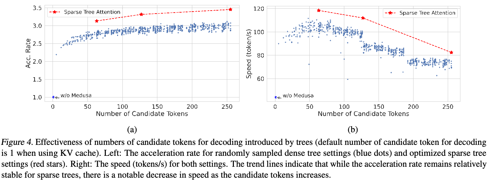
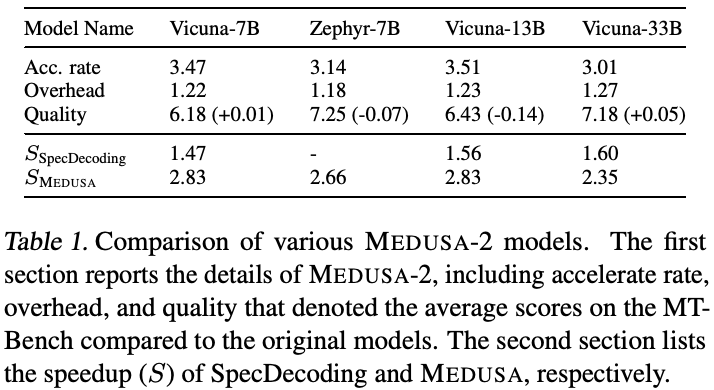
（接上页）质量可以通过自蒸馏得到良好对齐，但 Medusa 头从自蒸馏中学到的分布，可能偏离原训练集。在研究中，我们也使用开源草稿模型，为 Vicuna 系列应用了 speculative decoding（Chen et al.，2023；Leviathan et al.，2022），详见附录 D。
这些结果凸显了扩大模型规模、采用自蒸馏时，速度与性能之间复杂的相互作用。结果也说明，Medusa-2 能在谨慎保留输出质量的同时提高处理效率，为 LLM 与 Medusa 头的联合优化提供了有前景的方向。
3.3. 消融研究
3.3.1. Tree attention 配置
我们使用 Medusa-2 Vicuna-7B，在 MT-Bench 的写作和角色扮演类别上研究 tree attention，旨在说明它的动机与性能。
图 4a 比较随机采样的稠密树配置（第 2.1.2 节，蓝点）与优化后的稀疏树配置（第 2.3.3 节，红星）的加速率。64 节点的稀疏树比 256 节点的稠密树有更好的加速率。图 4b 的速度下降，源于计算受限引入的额外开销。更复杂的树虽然能够提高加速率，但线性层与 self-attention 的密集矩阵乘法会牺牲速度。如图 4a，树规模增长时，加速率的增长呈对数趋势，并逐渐放缓。不过，初期收益很大，足以使 Medusa 实现显著加速。若加速率增幅小于开销增幅，整体性能反而会下降。详细研究见附录 G。
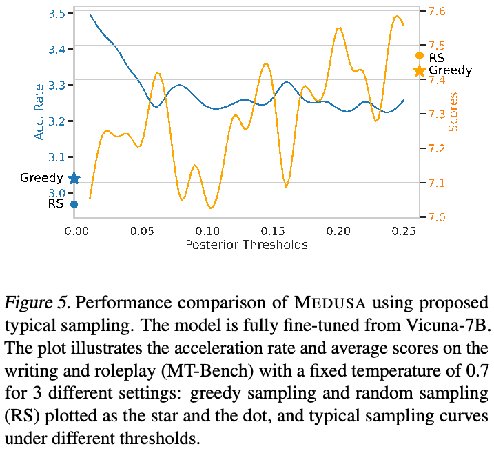
3.3.2. 典型接受的阈值
我们在 MT-Bench 的写作和角色扮演类别上，研究典型接受阈值（下页续）
（接上页）（Zheng et al.，2023），模型为 Medusa-2 Vicuna-7B。采用 Vicuna-7B 时，我们遵循 Hewitt et al.（2022）的方法，设置 \(\alpha=\sqrt{\epsilon}\)。图 5 比较不同采样设置下的性能。阈值 \(\epsilon\) 从 0.01 开始，以 0.01 为步长增至 0.25。我们观察到明显权衡：\(\epsilon\) 越大，质量越高，但加速率越低。此外，对于要求创造性的任务，默认随机采样优于贪心采样；随着 \(\epsilon\) 增大，所提典型采样与随机采样的表现相当。
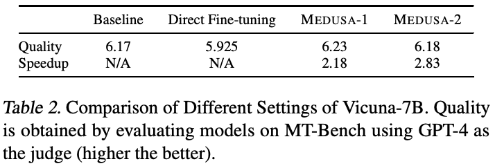
3.3.3. 两阶段微调的有效性
表 2 展示了 Vicuna-7B 不同微调策略的性能差异。Medusa-1 只微调 Medusa 头，在不损害生成质量的前提下实现 2.18 倍加速。采用两阶段微调的 Medusa-2（第 2.2.2 节）保持生成质量，同时比 Medusa-1 提供更大加速，达 2.83 倍。相比之下，直接将模型与 Medusa 头联合微调，会降低生成质量。这说明采用 Medusa-2 微调，可以保持模型质量，同时比 Medusa-1 进一步提高速度。
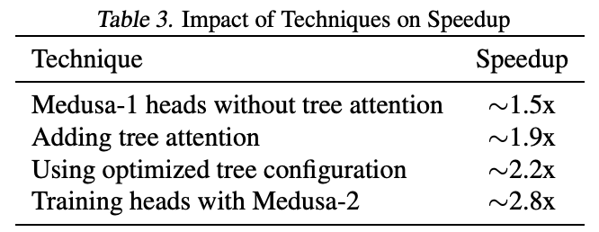
4. 讨论
总之，Medusa 为模型配备额外预测 decoding 头，同时生成多个 token，绕开顺序 decoding 的限制，将 LLM 推理速度提高至 2.3–2.8 倍。它的主要优点包括简单、参数高效，以及易于集成到已有系统。Medusa 无需专门的草稿模型。典型接受方案消除了拒绝采样的复杂性，同时提供合理输出。我们的方法包含两种高效训练流程，确保在不同模型和提示类型上均有高质量输出。表 3 总结了各项技术的发展及其对加速的影响。
为简单起见，本文关注 batch 大小为 1 的设置。不过，我们强调，本文思路可推广到更大 batch；在本文发布之后，TensorRT、Hugging Face TGI 等库已支持这一点。
致谢
我们衷心感谢以下人士，他们的贡献对本项目十分宝贵：
- Zhuohan Li，提供了关于 LLM 服务的宝贵见解。若还未了解他的 vLLM 项目，请务必看看，它令人印象深刻。
- Shaojie Bai，参与关键讨论，帮助塑造了本工作的早期方向。
- Denny Zhou，向 Tianle 介绍截断采样方案，并鼓励他探索 LLM 服务领域。
- Yanping Huang，向 Tianle 指出 LLM 服务中的内存带宽受限挑战。
- Lianmin Zheng，澄清不同规模 Vicuna 模型使用的不同训练方案。
Jason D. Lee 感谢 NSF CCF 2002272、NSF IIS 2107304 和 NSF CAREER Award 2144994 的支持。Deming Chen 感谢 UIUC AMD Center of Excellence 的支持。
影响声明
Medusa 是一种提高大语言模型（LLM）推理速度的创新方法，其提出对社会、技术和伦理具有一系列更广泛的影响。本节详细探讨这些影响。
社会与技术影响
- AI 的可及性与普及：Medusa 显著提高 LLM 效率，让更多用户和组织能够使用先进 AI 技术。普及能够推动各领域创新，包括（下页续）
- （接上页）教育、医疗和娱乐，有望带来造福整个社会的突破。
- 环境影响：Medusa 带来的 LLM 推理加速可能降低能源消耗和碳足迹，契合可持续 AI 实践日益增长的需求，为环境保护作出贡献。
- 经济影响：Medusa 提高效率，可能降低部署先进 AI 模型的成本门槛，使中小企业得以使用先进 AI 能力。这可能刺激经济增长、促进竞争并推动技术创新。
伦理考量
- 偏见与公平：Medusa 虽旨在提高 LLM 效率，但也继承了主干模型的伦理问题，包括偏见与公平。需要研究其保持生成质量的能力，确保模型不会延续或放大已有偏见。
- 透明度与问责：Medusa 的复杂性，特别是树结构 attention 与多个 decoding 头，可能给模型可解释性带来挑战。确保决策过程透明、维持对决策的问责，对建立 AI 系统的信任至关重要。
- 安全与隐私：经 Medusa 增强的 LLM 加速能力可能被恶意利用，例如大规模生成虚假信息或自动化网络攻击。必须制定并执行伦理准则与安全措施，防止滥用。
参考文献
Ainslie, J., Lee-Thorp, J., de Jong, M., Zemlyanskiy, Y ., Lebr´on, F., and Sanghai, S. GQA：由多头 checkpoint 训练广义 multi-query transformer 模型。 arXiv preprint arXiv:2305.13245, 2023.
Axolotl.
Axolotl. https://github.com/OpenAccess-AI-Collective/axolotl, 2023.
Basu, S., Ramachandran, G. S., Keskar, N. S., and Varshney, L. R. MIROSTAT：直接控制困惑度的神经文本 decoding 算法。 In International Conference on Learning Representations, 2021. URL https://openreview.net/forum?id=W1G1JZEIy5_.
Brown, T., Mann, B., Ryder, N., Subbiah, M., Kaplan, J. D., Dhariwal, P., Neelakantan, A., Shyam, P., Sastry, G., Askell, A., et al. 语言模型是少样本学习器。 Advances in neural information processing systems, 33: 1877–1901, 2020.
Chen, C., Borgeaud, S., Irving, G., Lespiau, J.-B., Sifre, L., and Jumper, J. 通过 speculative sampling 加速大语言模型 decoding。 February 2023. doi: 10.48550/ARXIV .2302.01318.
Chen, L. 剖析 GPT 推理中的 batch 效应。 https://le.qun.ch/en/blog/2023/05/13/transformer-batching/, 2023. Blog.
Chiang, W.-L., Li, Z., Lin, Z., Sheng, Y ., Wu, Z., Zhang, H.,
Zheng, L., Zhuang, S., Zhuang, Y ., Gonzalez, J. E., Stoica, I., and Xing, E. P. Vicuna：以 90%* 的 ChatGPT 质量令 GPT-4 印象深刻的开源聊天机器人， March 2023. URL https://lmsys.org/blog/2023-03-30-vicuna/ .
Chowdhery, A., Narang, S., Devlin, J., Bosma, M., Mishra, G., Roberts, A., Barham, P., Chung, H. W., Sutton, C., Gehrmann, S., et al. PaLM：利用 Pathways 扩展语言建模规模。 arXiv preprint arXiv:2204.02311, 2022.
Dettmers, T., Lewis, M., Shleifer, S., and Zettlemoyer, L. 通过分块量化实现 8-bit 优化器。 International Conference on Learning Representations, 2021.
Dettmers, T., Lewis, M., Belkada, Y ., and Zettlemoyer, L. LLM.int8()：大规模 transformer 的 8-bit 矩阵乘法。 arXiv preprint arXiv:2208.07339, 2022.
Dettmers, T., Pagnoni, A.,
Holtzman, A., and Zettlemoyer, L. QLoRA：量化 LLM 的高效微调。 arXiv preprint arXiv:2305.14314, 2023.
Ding, N., Chen, Y ., Xu, B., Qin, Y ., Zheng, Z., Hu, S., Liu, Z., Sun, M., and Zhou, B. 通过扩大高质量指令对话规模增强对话语言模型， 2023.
Dubois, Y .,
Li, X., Taori, R., Zhang, T., Gulrajani, I., Ba, J., Guestrin, C., Liang, P., and Hashimoto, T. B. AlpacaFarm：用于人类反馈学习方法的模拟框架， 2023.
Elfwing, S., Uchibe, E., and Doya, K. 用于强化学习中神经网络函数逼近的 sigmoid 加权线性单元。 Neural Networks, 2017. doi: 10.1016/j.neunet.2017.12.012.
Fan, A., Lewis, M., and Dauphin, Y . 层级神经故事生成。 In Proceedings of the 56th Annual Meeting of the Association for Computational Linguistics (Volume 1: Long Papers). Association for Computational Linguistics, 2018. doi: 10.18653/v1/p18-1082.
Frantar, E., Ashkboos, S., Hoefler, T., and Alistarh, D. GPTQ：生成式预训练 transformer 的精确后训练量化。 arXiv preprint arXiv:2210.17323, 2022.
Google. PaLM 2 技术报告， 2023. URL https://ai.google/static/documents/palm2techreport.pdf.
Hewitt, J., Manning, C. D., and Liang, P. 将截断采样视为语言模型去平滑。 October 2022. doi: 10.48550/ARXIV .2210.15191.
Hoffmann, J., Borgeaud, S., Mensch, A., Buchatskaya, E., Cai, T., Rutherford, E., Casas, D. d. L., Hendricks, L. A., Welbl, J., Clark, A., et al. 训练计算最优的大语言模型。 arXiv preprint arXiv:2203.15556, 2022.
Holtzman, A., Buys, J., Du, L., Forbes, M., and Choi, Y . 神经文本退化的奇特现象。 In International Conference on Learning Representations, 2020. URL https://openreview.net/forum?id=rygGQyrFvH.
Hu, E. J., Shen, Y ., Wallis, P., Allen-Zhu, Z., Li, Y ., Wang, S., and Chen, W. LoRA：大语言模型的低秩适配。 ICLR, 2021.
Joao Gante. 辅助生成：低延迟文本生成的新方向， 2023. URL https://huggingface.co/blog/assisted-generation.
Kim, S., Hooper, C., Gholami, A., Dong, Z.,
Li, X., Shen, S., Mahoney, M. W., and Keutzer, K. SqueezeLLM：稠密与稀疏量化。 arXiv preprint arXiv:2306.07629, 2023.
Kim, Y . and Rush, A. M. 序列级知识蒸馏。 EMNLP, 2016.
Kumar, A., Raghunathan, A., Jones, R., Ma, T., and Liang, P. 微调可能扭曲预训练特征并降低分布外性能。 International Conference on Learning Representations, 2022.
Kwon, W., Li, Z., Zhuang, S., Sheng, Y .,
Zheng, L., Yu, C. H., Gonzalez, J. E., Zhang, H., and Stoica, I. 利用 PagedAttention 高效管理大语言模型服务的内存。 In Proceedings of the ACM SIGOPS 29th Symposium on Operating Systems Principles, 2023.
Leviathan, Y ., Kalman, M., and Matias, Y . 通过 speculative decoding 加速 transformer 推理。 November 2022. doi: 10.48550/ARXIV .2211.17192.
Li, X., Zhang, T.,
Dubois, Y ., Taori, R., Gulrajani, I., Guestrin, C., Liang, P., and Hashimoto, T. B. AlpacaEval：指令遵循模型的自动评估器。 https://github.com/tatsu-lab/alpaca_eval, 2023.
Lin, J., Tang, J., Tang, H., Yang, S., Dang, X., and Han, S. AWQ：用于 LLM 压缩与加速的激活感知权重量化。 arXiv preprint arXiv:2306.00978, 2023.
Meister, C., Wiher, G., Pimentel, T., and Cotterell, R. 论语言生成中的概率与质量悖论。 March 2022. doi: 10.48550/ARXIV .2203.17217.
Meister, C., Pimentel, T., Wiher, G., and Cotterell, R. 局部典型采样。 Transactions of the Association for Computational Linguistics, 11:102–121, 2023.
Miao, X., Oliaro, G.,
Zhang, Z., Cheng, X., Wang, Z., Wong, R. Y . Y ., Chen, Z., Arfeen, D., Abhyankar, R., and Jia, Z. SpecInfer：通过推测式推理与 token 树验证加速生成式 LLM 服务。 arXiv preprint arXiv:2305.09781, 2023.
NVIDIA. NVIDIA A100 Tensor Core GPU。
OpenAI. GPT-4 技术报告， 2023.
Ouyang, L., Wu, J., Jiang, X., Almeida, D., Wainwright, C. L., Mishkin, P., Zhang, C., Agarwal, S., Slama, K., Ray, A., et al. 利用人类反馈训练语言模型遵循指令。 arXiv preprint arXiv:2203.02155, 2022.
Pan, J. Tiny Vicuna 1B。 https://huggingface.co/Jiayi-Pan/Tiny-Vicuna-1B , 2023.
Pillutla, K., Swayamdipta, S., Zellers, R., Thickstun, J., Welleck, S., Choi, Y ., and Harchaoui, Z. MAUVE：利用散度前沿测量神经文本与人类文本之间的差距。 In Beygelzimer, A., Dauphin, Y ., Liang, P., and Vaughan, J. W. (eds.),Advances in Neural Information Processing Systems, 2021. URL https://openreview.net/forum?id=Tqx7nJp7PR.
Pope, R., Douglas, S.,
Chowdhery, A., Devlin, J., Bradbury, J., Levskaya, A., Heek, J., Xiao, K., Agrawal, S., and Dean, J. 高效扩展 transformer 推理。 November 2022. doi: 10.48550/ARXIV .2211.05102.
ShareGPT.
ShareGPT. https://huggingface.co/datasets/Aeala/ShareGPT_Vicuna_unfiltered, 2023.
Shazeer, N. 快速 transformer decoding：只需一个写入头。 arXiv preprint arXiv:1911.02150, 2019.
Spector, B. and Re, C. 通过分阶段 speculative decoding 加速 LLM 推理。 arXiv preprint arXiv:2308.04623, 2023.
Stern, M.,
Shazeer, N. M., and Uszkoreit, J. 深度自回归模型的分块并行 decoding。 Neural Information Processing Systems, 2018.
Touvron, H., Martin, L., Stone, K., Albert, P., Almahairi, A., Babaei, Y ., Bashlykov, N., Batra, S., Bhargava, P., Bhosale, S., et al. Llama 2：开放基础模型与微调对话模型。 arXiv preprint arXiv:2307.09288 , 2023.
Tunstall, L., Beeching, E., Lambert, N., Rajani, N., Rasul, K., Belkada, Y ., Huang, S., von Werra, L., Fourrier, C., Habib, N., Sarrazin, N., Sanseviero, O., Rush, A. M., and Wolf, T. Zephyr：语言模型对齐的直接蒸馏， 2023.
Xia, H., Ge, T., Chen, S.-Q., Wei, F., and Sui, Z. Speculative decoding：自回归翻译的无损加速， 2023. URL https://openreview.net/forum?id=H-VlwsYvVi.
Xiao, G.,
Lin, J., Seznec, M., Wu, H., Demouth, J., and Han, S. SmoothQuant：大语言模型精确而高效的后训练量化。 In International Conference on Machine Learning , pp. 38087–38099. PMLR, 2023a.
Xiao, Y ., Wu, L., Guo, J., Li, J., Zhang, M., Qin, T., and Liu, T.-y. 神经机器翻译及其他领域的非自回归生成综述。 IEEE Transactions on Pattern Analysis and Machine Intelligence, 2023b.
Ying, C., Cai, T., Luo, S., Zheng, S., Ke, G., He, D., Shen, Y ., and Liu, T.-Y . transformer 在图表示上真的表现不佳吗？ Advances in Neural Information Processing Systems, 34:28877–28888, 2021.
Zhang, P., Zeng, G., Wang, T., and Lu, W. TinyLlama：开源小语言模型， 2024.
Zhang, S., Roller, S., Goyal, N., Artetxe, M., Chen, M., Chen, S., Dewan, C., Diab, M.,
Li, X., Lin, X. V ., et al. OPT：开放的预训练 transformer 语言模型。 arXiv preprint arXiv:2205.01068, 2022.
Zhang, Z., Sheng, Y ., Zhou, T., Chen, T.,
Zheng, L., Cai, R., Song, Z., Tian, Y ., R´e, C., Barrett, C., et al. H₂O：用于大语言模型高效生成推理的 heavy-hitter oracle。 arXiv preprint arXiv:2306.14048, 2023.
Zheng, L.,
Chiang, W.-L., Sheng, Y ., Zhuang, S., Wu, Z., Zhuang, Y ., Lin, Z., Li, Z., Li, D., Xing, E. P., Zhang, H., Gonzalez, J. E., and Stoica, I. 利用 MT-Bench 和 Chatbot Arena 评估 LLM-as-Judge， 2023.
A. 相关工作
A.1. LLM 推理加速
大语言模型（LLM）推理效率低下，主要源于自回归 decoding 过程受内存带宽限制。已有多种方法旨在缓解这一问题，改善推理延迟与吞吐量。传统上，batch 推理是提高算术强度、摆脱内存带宽限制的直接方法。但对于 LLM，模型参数和 Key-Value（KV）cache 均占用大量加速器内存，妨碍使用大 batch。解决这一问题的现有方法可概念性地分成两类：（1）降低内存消耗，从而减少内存传输开销并支持更大 batch；（2）减少 decoding 步数，直接降低延迟。
减少 KV cache。Multi-query attention（Shazeer，2019）和 Grouped-query attention（Ainslie et al.，2023）直接减少 KV cache：attention 模块中 key、value 头数量少于 query 头，显著降低 KV 内存消耗，从而支持更大的 batch 并提高加速器利用率（Pope et al.，2022）。此外，Zhang et al.（2023）提出选择性保留最关键的 KV token，进一步缩减 KV cache。从系统角度，Kwon et al.（2023）引入分页内存管理方案，减少 KV cache 碎片。
量化。量化广泛用于缩减 LLM 内存消耗。Xiao et al.（2023a）在激活与参数之间重新缩放，以消除 outlier 并简化量化。Dettmers et al.（2022）将矩阵乘法拆分为主要的 8-bit 运算与少量 16-bit 运算。Frantar et al.（2022）迭代地将权重列舍入为 3/4 bit；Lin et al.（2023）提出激活感知量化，保护显著权重并将 LLM 压缩至 3/4 bit。Kim et al.（2023）则引入稀疏加低精度模式，处理少量关键权重；此外还有其他技术。
Speculative decoding。与上述方法正交，speculative decoding（Leviathan et al.，2022；Chen et al.，2023）旨在并行执行多个 decoding 步骤，从而减少总步数。它使用较小草稿模型推测后续若干词，再由 LLM 集体评估并酌情接受，实现并行化。虽然与非自回归生成文献（Xiao et al.，2023b）相呼应，这一方法专为 LLM 设计，以解决上述低效率问题。不同于以往工作，我们利用原模型预测，而非引入额外草稿模型。这样更直接，能够无缝集成到现有系统，避免管理两个模型的复杂性。独立地，Miao et al.（2023）与 Spector & Re（2023）提出用树结构 attention 并行生成多个候选；前者建议使用模型集成提出候选，后者主张给草稿模型增加一个层级。不过，草稿模型需要专门预训练并与目标模型对齐。使用多个草稿模型可能繁琐，还涉及并行管理的复杂性；仅依赖 decoding 头的方案更简单。Miao et al.（2023）用多个草稿模型生成 token，通过 tree attention 合并；Spector & Re（2023）用小草稿模型以 batch 方式处理树的各层。相比之下，我们直接用各 Medusa 头的高概率预测 token 创建静态稀疏树，无需自回归或调整树结构。这简化了流程并提高效率。此外，我们通过详细消融，说明树节点如何影响 decoding 速度。
A.2. 采样方案
从 LLM 采样文本的方式会显著影响生成质量。近期研究发现，直接从语言模型采样可能产生不连贯或无意义结果（Pillutla et al.，2021；Holtzman et al.，2020）。为此，研究者提出截断采样方案（Fan et al.，2018；Basu et al.，2021；Meister et al.，2022；Hewitt et al.，2022；Meister et al.，2023），在每个 decoding 步骤，于特定允许集合上的截断分布进行采样，以生成高质量、多样化样本。
不同策略以不同方式定义允许集合。例如，Top-k 采样（Fan et al.，2018）保留概率最高的 \(k\) 个词，而 top-p 采样（Holtzman et al.，2020）则纳入总概率占 \(p\)（下页续）
（接上页）百分比的最小词集合。另一种典型 decoding（Meister et al.，2023）利用预测分布的熵设定纳入阈值。Hewitt et al.（2022）提供统一框架，全面理解截断采样技术。
受这些方法启发，我们的典型接受方案也通过定义允许集合，从采样过程中排除不太可能的候选。不过，我们不坚持输出分布与语言模型分布精确对应。这种偏离使输出更加多样且保持高质量，在不损害生成文本完整性的前提下提高效率。
B. 实验设置
B.1. 常用术语
我们澄清三个常用术语：a）加速率：每个 decoding 步骤平均 decoding 的 token 数；标准自回归模型中为 1.0。b）开销：相对于经典 decoding，每步的额外开销，计算方式为 Medusa 模型平均每步延迟除以普通模型平均每步延迟。c）加速比：实际墙钟时间的加速比例。依据这些定义，有：加速比 = 加速率 / 开销。
B.2. 共用设置
所有实验均使用 Axolotl（Axolotl，2023）训练框架、带 warmup 的余弦学习率调度器，以及 8-bit AdamW（Dettmers et al.，2021）优化器。训练 5 个单层 Medusa 头，式（1）的 \(\lambda_k\) 设为 \(0.8^k\)。Medusa-2 使用 LoRA（Hu et al.，2021）或 QLoRA（Dettmers et al.，2023）微调，Medusa 头的学习率为主干的 4 倍。LoRA 应用于主干所有线性层，包括语言模型头。适配器 rank 设为 32、\(\alpha\) 为 16，并加入 0.05 的 dropout。
B.3. Vicuna-7B、13B 上的 Medusa-1 与 Medusa-2
全局 batch 大小为 64；主干峰值学习率为 5e-4，Medusa 头为 2e-3，warmup 40 步。两种模型均使用 4-bit 量化主干。先以 Medusa-1 训练，再用训练所得模型初始化 Medusa-2。Medusa-2 采用 QLoRA，式（2）的 \(\lambda_0\) 设为 0.2。
B.4. Vicuna-33B 和 Zephyr-7B 的自蒸馏训练
两个模型都采用 Medusa-2，而非两阶段训练。对 \(\theta_0\) 使用正弦调度，在训练结束时逐渐增加到峰值；我们发现这一方法同样有效。由于自蒸馏损失相对小，主干 LoRA 适配器峰值学习率设为 1e-4，warmup 步数设为 20。式（2）的 \(\lambda_0\) 设为 0.01。
C. 优化后 tree attention 的可视化
图 6 展示 Medusa-2 Vicuna-7B 的稀疏树结构，深度为四层，表明四个 Medusa 头参与计算。先通过笛卡尔积构造树，再根据各头在 Alpaca-eval 数据集（Dubois et al.，2023）上测得的 Top-k 预测统计期望进行剪枝细化。树偏向左侧，直观表示算法偏好各头中概率较高的节点。
D. Speculative decoding 的结果
本研究将 speculative decoding 应用于 Vicuna 系列（Chiang et al.，2023）的 7B、13B、33B 模型。初始框架采用 Llama-68M、160M（Miao et al.，2023），以及 Tiny-Llama（Zhang et al.，2024）、使用 Vicuna 风格指令微调策略从 Tiny-Llama 微调得到的 Tiny-Vicuna（Pan，2023）等开源模型。由于 speculative decoding 方法（Chen et al.，2023；Leviathan（下页续）
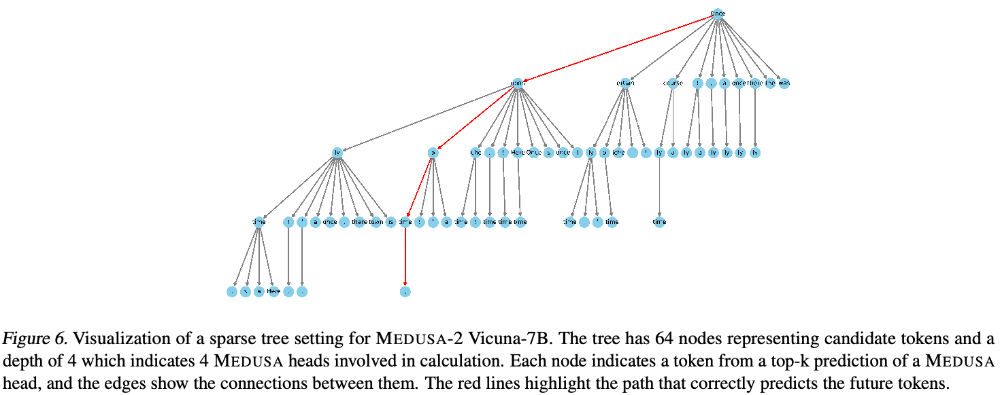
（接上页）et al.，2022）具有专有性质，我们采用开源替代实现3评估。此外，使用 torch.compile() 加速草稿模型推理。
图 7 的结果表明，草稿模型的最优设置随 Vicuna 规模变化。具体地，Llama-68M 在草稿 token 数 \(\gamma=4\) 时对 Vicuna-7B 最佳，同一草稿模型在 \(\gamma=3\) 时对 Vicuna-13B 最有效。对更大的 Vicuna-33B，Tiny-Vicuna（Vicuna-1B）在 \(\gamma=3\) 时加速最大。这说明草稿模型的选择与设置应适配 LLM 规模，也为该领域进一步探索提供了方向。
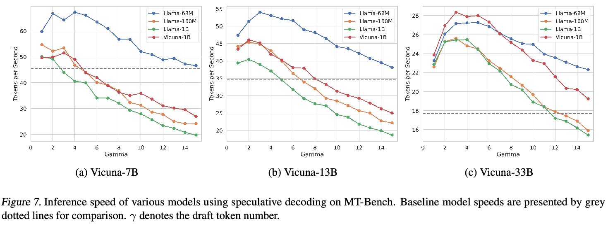
E. 所有模型的补充结果
图 8 展示各模型的加速情况。
F. AlpacaEval 数据集上的补充结果
我们在 AlpacaEval（Li et al.，2023）上进一步实验。Medusa-2 的加速效果稳定，与 MT-Bench 上的结果相似。
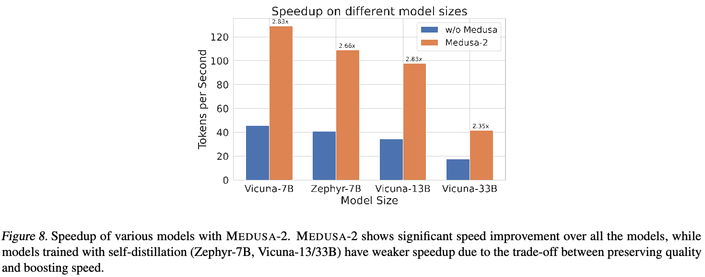
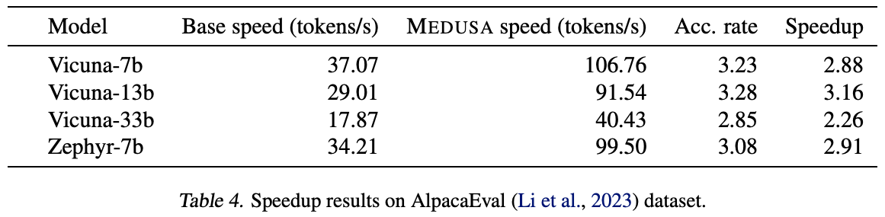
G. 硬件约束与 Medusa 的探索和建模
我们采用简化的 Llama 系列模型，探索硬件约束，特别是内存带宽限制，以及它们对 Medusa 风格并行 decoding 的影响。首先确定，线性层和 attention 矩阵乘法等涉及矩阵乘法的算子是主要开销来源。我们在 A100-80GB-PCIe、A40、A6000 等不同 GPU 上，分析 FLOP/s 与运算强度（FLOP/s 与带宽 bytes/s 之比）的关系。随后考察不同算子采用 Medusa 后，两者关系如何变化。最后，用直接的解析模型计算加速率，并结合硬件基准，理解不同模型规模、序列长度和 batch 大小下的效果。
G.1. 算子的 Roofline 模型
我们分析 LLM 各算子的 Roofline 模型，重点关注 Llama-7B、Llama-13B、Llama-33B（Touvron et al.，2023），在 A100-80GB-PCIe、A40、A6000 上进行基准测量。我们研究三类矩阵乘法算子，因为它们是这些模型的主要计算开销来源。研究遵循 Chen（2023）报告；该报告研究 batch 大小的效果，而我们更关注 decoding 与并行 decoding。
表 5 详述 prefill、decoding 和 Medusa decoding 各阶段算子的计算与空间复杂度。算子包括 query、key、value 矩阵的线性层（\(XW_Q,XW_K,XW_V\)）、attention 矩阵乘法（\(QK^T,PV\)），以及 up/gate/down 线性层（\(XW_u,XW_g,XW_d\)）。\(b\) 为 batch 大小，\(s\) 为序列长度，\(h\) 为隐藏维度，\(i\) 为中间维度，\(n\) 为 attention 头数，\(d\) 为头维度，\(q\) 为 Medusa 候选长度。更多算子细节见 Touvron et al.（2023）、Chen（2023）。
图 9–17 展示不同设置下，不同模型（7/13/33B）的三类算子基准。为评估算子性能与吞吐量，我们选择以下设置的组合：batch 大小从 1 到（下页续）
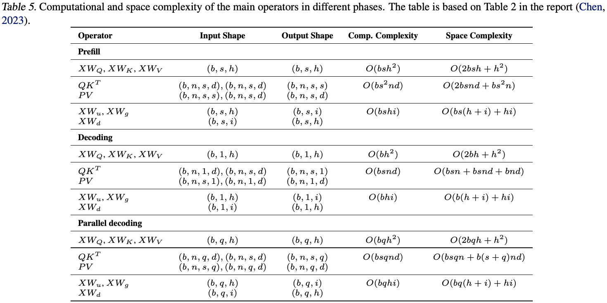
（接上页）64，取 2 的幂；序列长度从 128 到 8192，也取 2 的幂（每个算子 49 种设置）。所有图均表明，在不同 GPU、不同模型规模下，各算子在 prefill 和 decoding 阶段的数据点聚集于非常相似的位置。
Prefill 阶段，增大 batch 会改变 attention 矩阵乘法的 FLOP/s（见 qk/pv init），但不影响运算强度（图 9 的竖直虚线箭头）。相比之下，增大序列长度会同时影响 prefill 的 FLOP/s 与运算强度（图 9 的斜虚线箭头）。Decoding 阶段，attention 矩阵乘法明显受内存带宽限制。虽然 batch 和序列长度变化会提高 FLOP/s，运算强度却几乎不变（见 qk/pv ar），表明 self-attention 的资源利用不充分。
Prefill 阶段的线性层大多受计算限制（见 qkv mlp init、up/gate/down init）。Decoding 阶段，线性层数据点构成一条与 GPU 内存带宽相同斜率的直线（见 qkv mlp ar、up/gate/down ar），说明 decoding 中的线性层也受内存带宽限制。增大 batch 可以借助更好的并行性，在带宽约束下提高实际 FLOP/s 与运算强度。请注意，线性层只处理新 token，与序列长度无关（见表 5 的 Decoding 部分）。
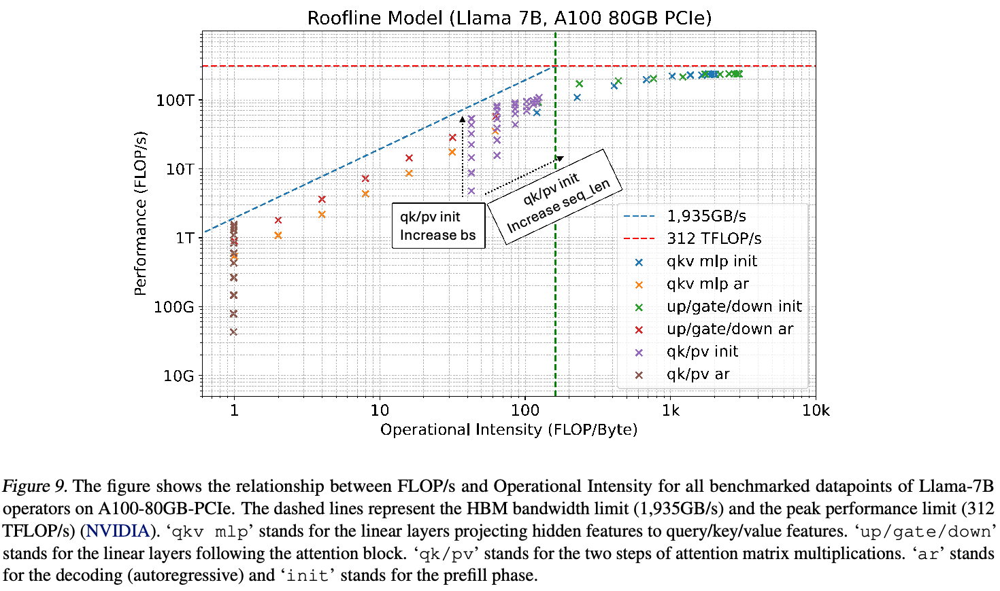
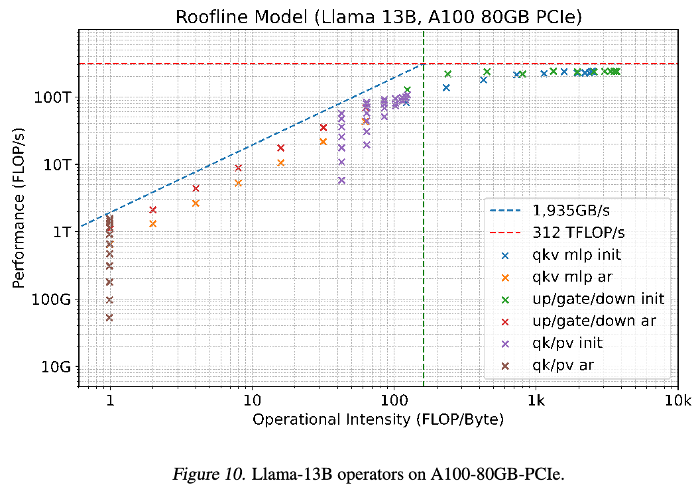
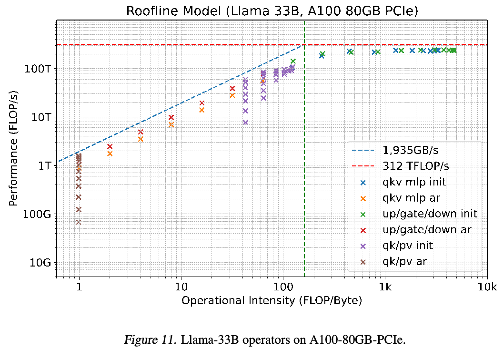
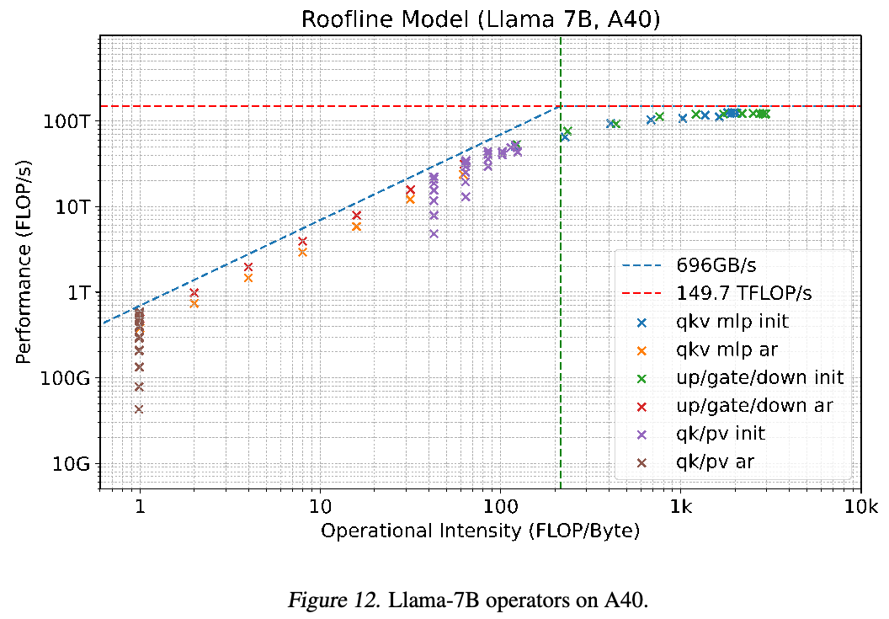
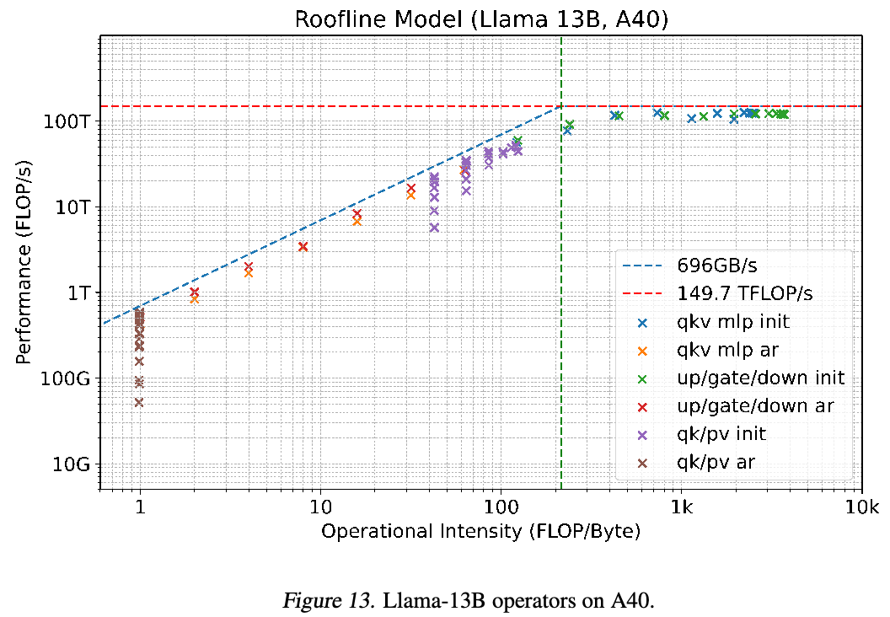
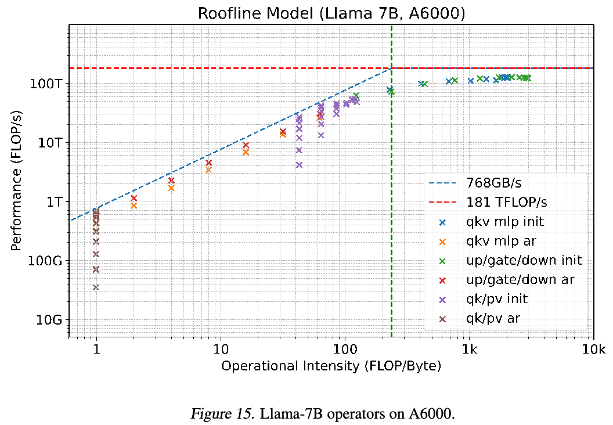
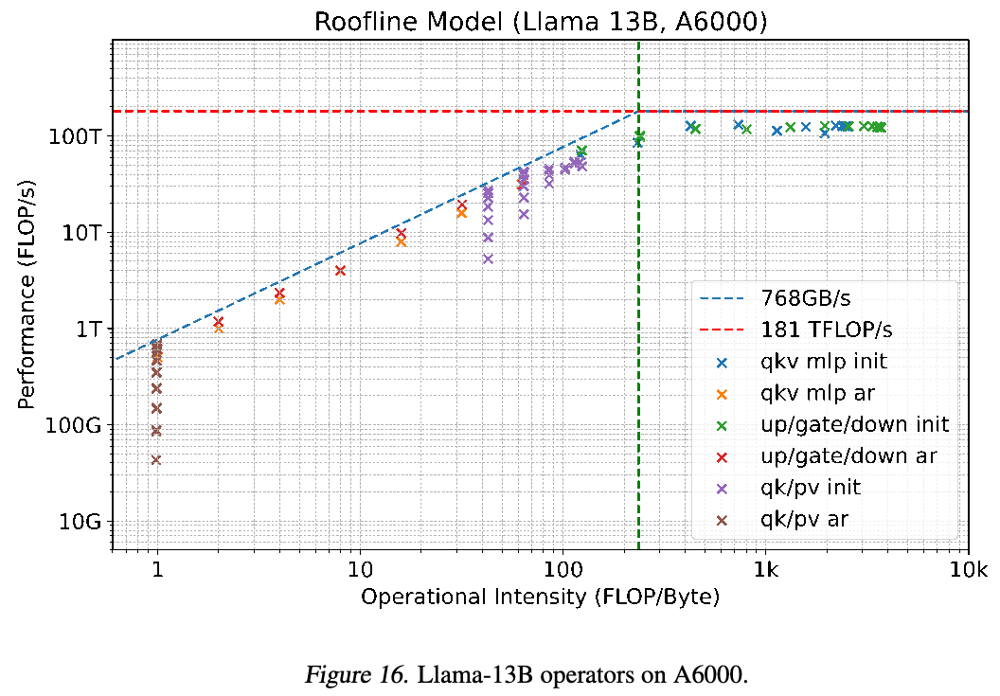
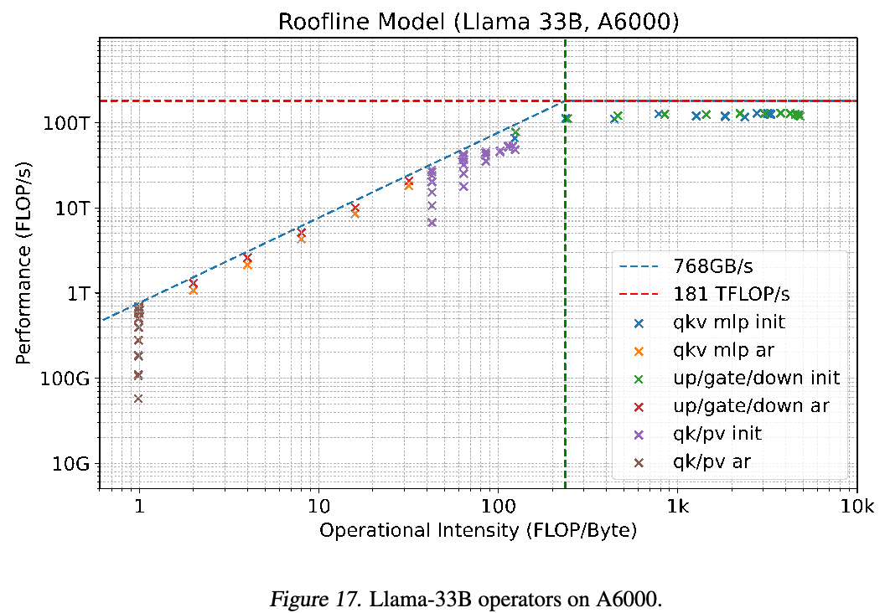
G.2. Medusa 中 FLOP/s 与运算强度的变化
我们考察 Medusa 如何改变运算强度并提高 FLOP/s，采用 A100-80GB-PCIe 上的 Llama-33B。
首先考察 attention 矩阵乘法。图 18 和表 6 展示 batch 固定为 16 时 Medusa 的效果。增加候选 token 后，FLOP/s 和运算强度都提高了（普通 decoding 结果以灰点表示），说明 Medusa 能利用额外候选提高计算吞吐量。在 batch 大小 16、序列长度 1024、64 个候选 token 下，Medusa 相对普通 decoding 实现 44 倍 FLOP/s 和 41 倍运算强度。图 19 和表 7 展示序列长度固定为 1024 时的效果；此时增大 batch 并不会提高运算强度。
接着考察线性层，重点是 up/gate/down 线性层。结果见图 20 和表 8。由于 decoding 中线性层仅处理未来 token、过去 token 已缓存，因此它们与序列长度无关。我们改变 batch 大小以观察效果。随着 Medusa 增加候选 token、batch 大小也增大，我们观察到从内存带宽受限区域向计算受限区域的转移。这展示 Medusa 如何将线性层的性能限制从内存带宽转变为计算能力。
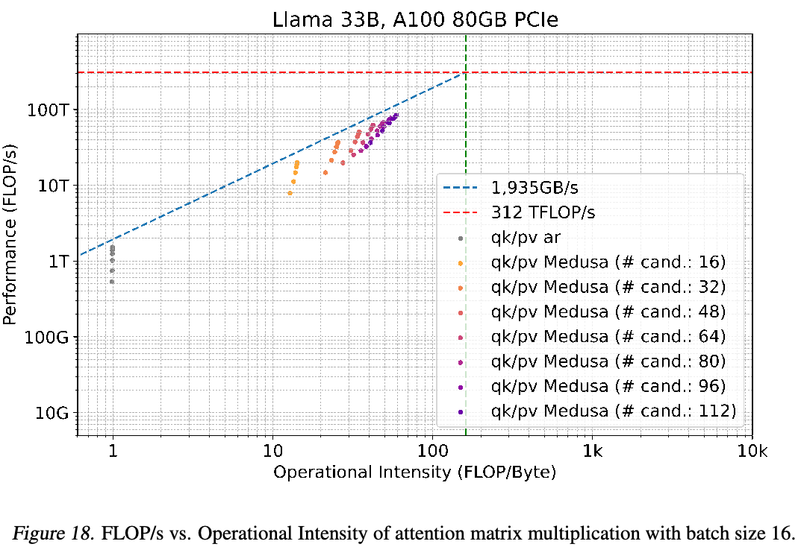
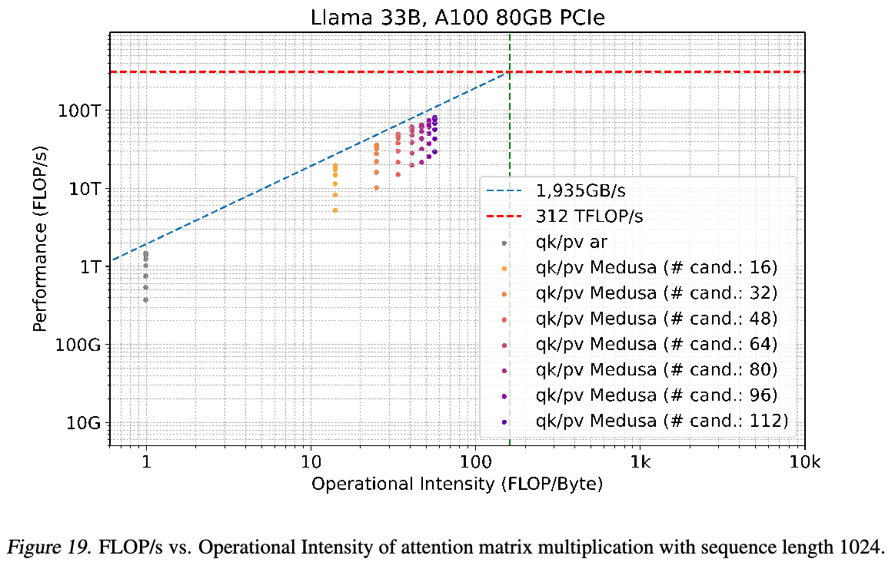
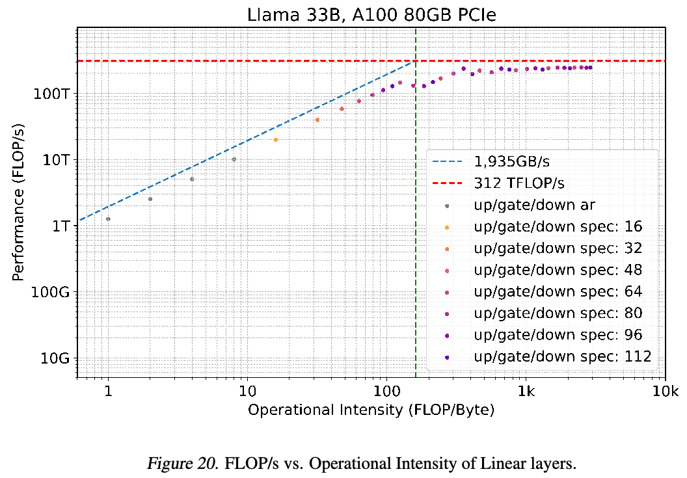
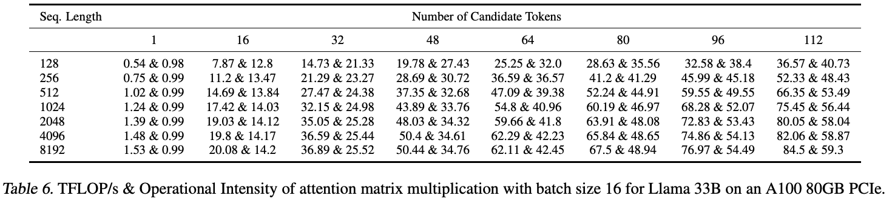
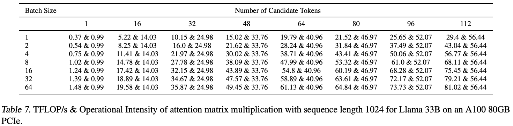
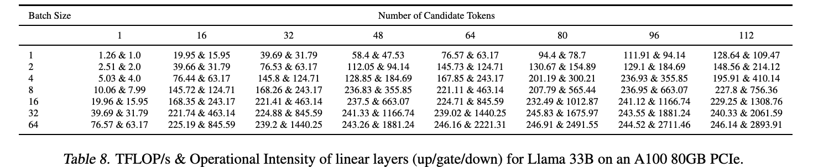
G.3. 预测 Medusa 性能
我们进一步用简单解析模型描述加速率。第 3.3.1 节消融表明，加速率可由简单对数函数近似。利用图 4a 的结果，我们拟合曲线为 \(\mathrm{acc\_rate}=0.477\log(\mathrm{num\_candidate})\)。先固定 batch 大小为 1、序列长度为 1024，模拟 Llama-7B 简化块的延迟；该块依次处理 \(XW_Q,XW_K,XW_V,QK^T,PV,XW_u,XW_g,XW_d\)。候选 token 通过第 2.1.2 节的 tree attention 并行处理。由于 Medusa 的验证、接受等后处理仅引入很小开销，我们忽略其延迟。图 21 展示此设置下，不同候选 token 数的模拟加速率与加速比。候选数量增大时，两者起初都提高；但超过 64 后，加速比开始下降，表明继续增加候选长度的收益递减。这与图 4b 一致，说明存在一个最优候选数范围，使 Medusa 获得最大性能收益。
图 22 在序列长度固定为 1024 时，绘出不同 batch 大小下的模拟加速比。结果表明，batch 超过 32 后，加速比下降，甚至可能产生负效果，原因是线性层由内存带宽受限转为计算受限。
另一个实验固定 batch 大小为 4，改变序列长度。如图 23，不同长度的最优候选 token 数相对一致，但随着序列增长，整体性能下降。下降主要源于 attention 矩阵乘法的开销；线性层计算则保持不变，因为它与序列长度无关。
模拟表明，最优候选 token 数是 Medusa 模型扩展的关键，因为超过某个范围后收益会下降。起初增大 batch 可通过并行提高性能，但 batch 过大会使线性层从内存带宽受限转为计算受限，降低加速比。更长序列会增加 attention 矩阵乘法开销，降低性能，凸显优化 attention 机制的必要性。有效扩展模型，需要平衡候选 token 数、调整 batch 以避免转入计算受限区域，并为更长序列增强 attention 机制。这些策略能够改善资源利用、提高性能，也展示了模拟在预测性能与指导加速策略设计上的价值。
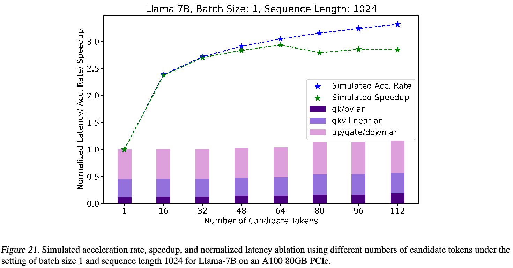
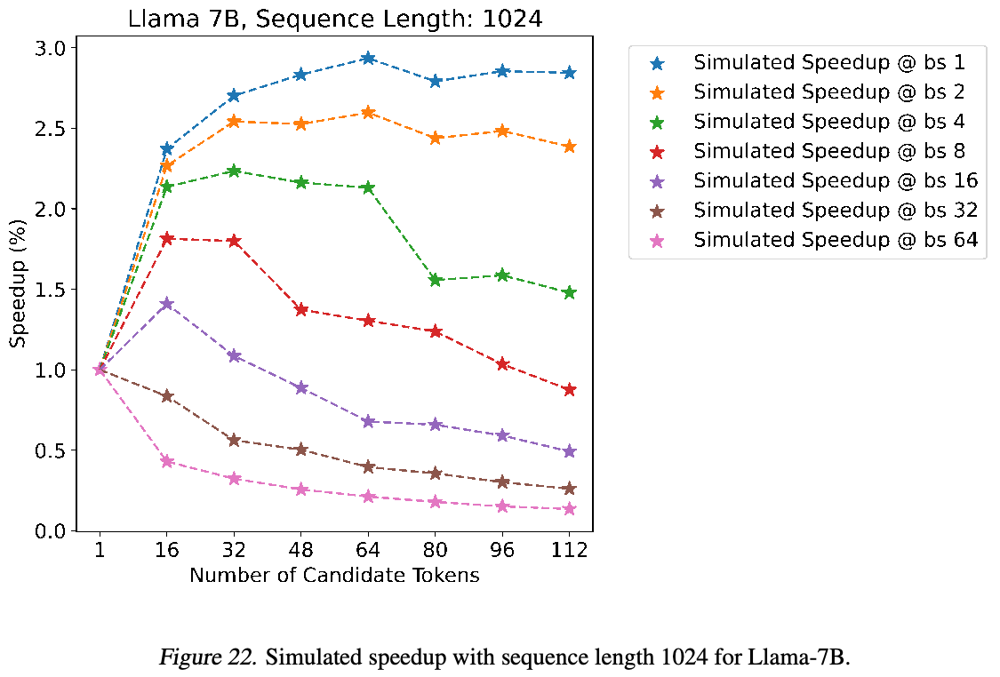
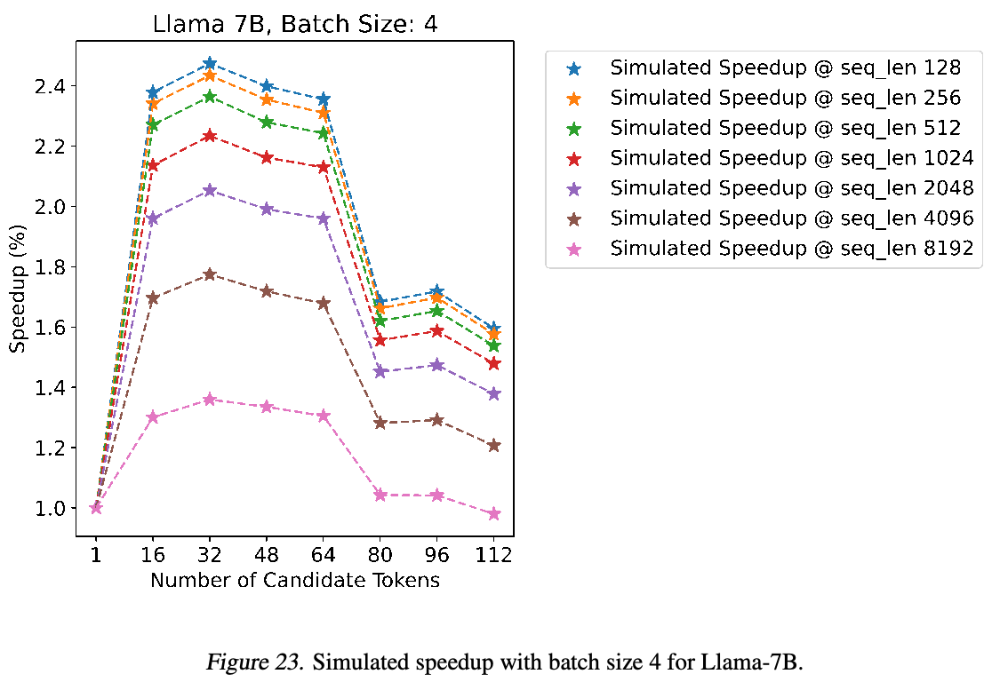